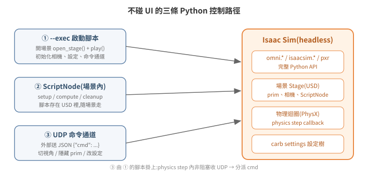

不碰 UI:用 Python 操作 Isaac Sim
GUI 操作(點選單、拖 prim、按 Play)本質上都是在呼叫同一套 Python API——Isaac Sim 的 UI 只是這些 API 的圖形前端。所以「不碰 UI」不是繞路,而是直接走正門:任何能在 GUI 做到的事,原則上都有對應的程式做法,而且可以在 headless 模式下執行、可以自動化、可以遠端觸發。
本篇整理三種由淺入深的做法:啟動時掛腳本(--exec)、場景內掛腳本(ScriptNode)、執行期遠端命令通道(UDP)。

1. --exec:啟動時執行腳本
Isaac Sim 啟動參數 --exec /path/to/script.py 會在 Kit 應用啟動後執行該腳本,腳本內可以使用完整的 omni.* / isaacsim.* / pxr API。最小可用的「開場景 + 開始模擬」:
# open_scene.py — 由 isaac-sim.streaming.sh --exec /open_scene.py 執行
from isaacsim.core.utils.stage import open_stage
import omni.timeline
ok = open_stage("/assets/my_scene.usd") # 回傳 bool,失敗常見原因:路徑錯、權限不足
print(f"[LAUNCH-OPEN] open_stage -> {ok}")
omni.timeline.get_timeline_interface().play() # 等同 GUI 按下 Play
版本注意:上面是 4.5–5.1.x 的介面。6.0 起 open_stage 移至 isaacsim.core.experimental.utils.stage,且回傳值從單一 bool 改為 (bool, Usd.Stage | None) tuple——ok = open_stage(...) 這種判斷式在 6.x 要跟著改成解包後再判斷。
兩個關鍵事實:
- 開場景是動作,不是啟動的副作用。Isaac Sim 啟動後是空 stage,不會自動載入任何場景;GUI 流程裡「開啟最近的檔案」這一步,headless 下就是
open_stage()。 - 模擬不會自己開始。載入場景後 timeline 停在 STOPPED,物理不 tick、TF 不發布。
timeline.play()(或 ROS2 的/set_simulation_state服務,見 05-ros2-bridge)是讓世界動起來的必要步驟。忘記這步是「headless 下什麼都不動」的第一大根因。
相機也能用程式控制
WebRTC 串流擷取的是 active viewport,而 viewport 相機是 stage 上的一個 prim——所以 headless 下切視角不需要 GUI:
from isaacsim.core.utils.viewports import set_camera_view
# Z-up 場景:eye 的 Z 越大越高;eye 與 target 的差向量 = 視線方向
set_camera_view(eye=[16.0, -16.0, 16.0], target=[-1.0, 1.0, 0.0])
實戰踩過的兩個坑:
- 啟動初期 viewport 可能尚未 ready,設了會被之後的預設相機蓋掉。做法是啟動後一段時間內週期性重設(例如每 ~5 秒一次、持續 80 秒),之後就穩定。
- 視線不要正好平行 up 向量(eye 與 target 只差 Z),此時 yaw 無定義會退化(gimbal lock)。要俯視就給 eye 一點水平偏移。
隱藏 UI 與任意設定:carb settings
Kit 的所有執行期設定都掛在 carb settings 樹上,GUI 快捷鍵只是改設定值的入口。例如 F11 全螢幕的實體是:
import carb.settings
carb.settings.get_settings().set("/app/window/hideUi", True) # 串流畫面只剩 viewport
同一個值也可以啟動參數直接帶:--/app/window/hideUi=true。注意:執行期改的設定與 prim 可見性都不持久,重啟後歸零——要固化就寫進 --exec 腳本的初始化裡。
2. ScriptNode:掛在場景內的腳本
--exec 腳本屬於「這次啟動」;ScriptNode(OmniGraph 的 Script Node)則是存在場景 USD 裡的腳本,場景在哪台機器開啟都會跟著執行。OmniGraph 是 Kit 內建的節點式執行引擎——場景裡的一張視覺化流程圖,節點隨模擬 tick 被逐一評估;ScriptNode 就是這些節點裡可以塞 Python 的一種。它有三個生命週期回呼:setup()(初始化)、compute()(每個 graph tick)、cleanup()(關閉)。
典型應用:讓外部程式直接控制場景內物件的位姿。以下節錄自實際使用過的範例(完整檔:examples/scriptnode_udp_pose.py):
# setup():開一個非阻塞 UDP socket
sock = socket.socket(socket.AF_INET, socket.SOCK_DGRAM)
sock.setblocking(False)
sock.bind(("127.0.0.1", 15001))
# compute():每 tick 讀完 UDP buffer,只套用最後一筆
while True:
try:
data, addr = sock.recvfrom(65535)
except BlockingIOError:
break
new_pose = parse_packet(data) # {"x":..,"y":..,"yaw":..}
# 用 USD Xform API 直接改 prim 的 translate / orient
xform = UsdGeom.Xformable(stage.GetPrimAtPath("/World/MyRobot"))
translate_op.Set(Gf.Vec3d(x, y, z))
orient_op.Set(quat_from_rpy(roll, pitch, yaw))
設計上有兩個值得學的細節:
- 非阻塞 + 排空 buffer 只取最後一筆:模擬 tick 頻率與外部送封包頻率不同步,若逐筆套用會累積延遲;只取最新 pose 是即時控制的正確語意。
- 這一 tick 沒收到新封包就什麼都不做,而不是重複套用上一筆——避免與物理引擎或其他控制來源打架。
⚠ 但要注意:直接改寫 prim 的 xform 是「瞬移」,與 articulation(物理關節)控制互斥。同一台機器人若已由 PhysX articulation 驅動,再用 ScriptNode 直改 root xform 會讓 PhysX 的模擬 view 失效(報 Simulation view object is invalidated),之後的關節回饋都不可信。一個物件只能選一條控制路徑,細節見 04-physics-world。
3. 執行期遠端命令通道:UDP + JSON
--exec 腳本只在啟動時跑一次,但把它寫成「初始化後進入事件迴圈」就成了常駐控制端。實戰驗證過的簡單模式:在 physics step callback(物理引擎每前進一步就呼叫一次的回呼;官方標準掛法是 SimulationContext.add_physics_callback(),其底層即 omni.physx 的 subscribe_physics_step_events,細節見 05 篇)裡非阻塞收 UDP,封包用 JSON 帶 cmd 欄位分派:
# --exec 腳本內,每個 physics step 呼叫
def drain_rx():
while True:
try:
data, _ = sock.recvfrom(65535)
except BlockingIOError:
return
msg = json.loads(data)
if msg["cmd"] == "view": set_camera_view(eye=msg["eye"], target=msg["target"])
elif msg["cmd"] == "find": find_prims(msg["pat"]) # 找 prim,印到 log
elif msg["cmd"] == "vis": set_visible(msg["path"], msg["show"]) # 顯示/隱藏 prim
elif msg["cmd"] == "rtx": carb.settings.get_settings().set(msg["key"], msg["val"])
elif msg["cmd"] == "dump": dump_positions() # 量測物件座標
外部這樣打(同機或經 SSH 通道):
python3 - <<'EOF'
import socket, json
socket.socket(socket.AF_INET, socket.SOCK_DGRAM).sendto(
json.dumps({"cmd": "view", "eye": [16,-16,16], "target": [-1,1,0]}).encode(),
("127.0.0.1", 9901))
EOF
這個模式的價值在於免重啟的即時除錯與操作:切視角、隱藏擋住畫面的天花板、改渲染設定、量座標,都是一個 JSON 封包的事。往上再接一層 MQTT 或 HTTP 轉發器,就能讓網頁按鈕遠端控制 headless Isaac Sim——通道是通用的,加新功能只是多一個 cmd 分支。
一個實戰教訓順帶記在這裡:在函式內寫 import carb.settings 會讓 carb 變成該函式的區域變數,函式內其他先於該行執行的 carb.log_warn 全部拋 UnboundLocalError。模組層級 import,函式內不要重複 import。
4. 三種做法怎麼選
| 做法 | 生命週期 | 適合 |
|---|---|---|
--exec 腳本 |
隨這次啟動 | 部署自動化:開場景、播放、設相機、初始化 |
| ScriptNode | 隨場景 USD | 場景自帶的行為,換機器也跟著走 |
| UDP 命令通道 | --exec 腳本內的常駐迴圈 |
執行期即時操作、遠端除錯、對外整合 |
三者可以疊加:--exec 負責初始化並掛上 UDP 通道,場景內的 ScriptNode 處理場景固有行為。
5. 延伸閱讀
- 官方文件:Isaac Sim Python Environment、OmniGraph Script Node
- 下一篇:03 模型檔案格式與匯入
- 想直接動手:07 最小可跑範例